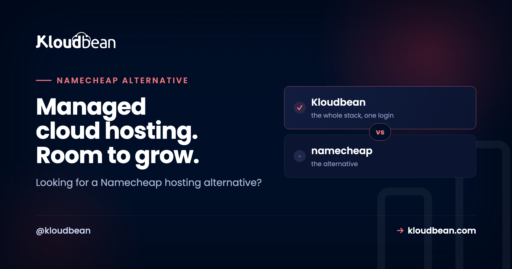

The Namecheap Alternative for When You've Outgrown Shared Hosting

Namecheap is a good registrar and a fine home for a small brochure site. But cheap shared hosting has a ceiling, and if your pages crawl the moment traffic shows up, you've hit it. This is a practical Namecheap alternative for hosting, written for people who've outgrown that shared plan and want room to grow. The move is to managed cloud: your own server resources, a modern stack, managed databases, and Git deploy, without becoming a sysadmin. One thing up front. This is a Namecheap hosting alternative, not a domain thing. Keep your domain right where it is.
Namecheap is great as a cheap registrar and for tiny sites. Once shared hosting starts throttling you (slow pages, 508 Resource Limit Is Reached errors, no root, no managed database), move up to managed cloud. Kloudbean runs your app on your own server across seven clouds, with managed databases, Git deploy, staging, and automatic backups, from $8/mo. Keep your domain at Namecheap and just point DNS.
First, the fair part: what Namecheap does well
Credit where it's due. Namecheap earned its name on cheap, no-drama domains, and it's a genuinely good registrar. The prices are honest, the renewal gouging is milder than most, and the shared/cPanel hosting is fine for what it is: a low-cost home for a small blog, a brochure site, or a landing page that gets a trickle of visitors. If that's your whole world, and it costs you a few dollars a month, you don't need to change anything. Really.
The trouble starts when the thing you built on that cheap plan starts working. Traffic climbs. The app gets heavier. You add a feature that needs a background job, or a database that isn't a single crowded MySQL instance. Shared hosting was never built for that, and no amount of "unlimited" marketing changes the physics of a box you split with a few hundred strangers.
Signs you've outgrown Namecheap shared hosting
You rarely get a warning email that says "you've outgrown this." You get symptoms. Here's what outgrowing shared hosting actually feels like:
- The site is fast at 2am and falls over at lunch. Traffic arrives and pages that loaded instantly start taking six, eight, ten seconds.
- You're seeing
508 Resource Limit Is Reachedor 500s at peak. That's the shared-hosting cap doing exactly what it was built to do: protect the box by throttling you. - Noisy neighbors. Some other account on the same server runs a runaway process, and your site pays for it with no explanation you can see.
- No real root or SSH. You can't install a package, tune the web server, or run a command your app needs. The control panel decides what's allowed.
- You're stuck on a dated stack. An old PHP version, no clean way to run Node.js or Python, no modern runtime. Your framework wants features the host doesn't offer.
- No managed database engines. You get a basic MySQL and that's it. No PostgreSQL you control, no Redis for caching, nothing you'd pick on purpose.
- Deploys are manual and nerve-racking. You drag files over FTP or the cPanel file manager, refresh, and hope nothing broke.
- No staging. You edit the live site directly, because there's nowhere safe to try a change first.
- Backups are a paid afterthought. Or an add-on you meant to enable and never did.
One of these on its own is just annoying. Three or four together is your site telling you it needs its own room. That's the point where an alternative to Namecheap shared hosting stops being a nice-to-have.
What actually changes when you move up
The core difference is simple. On shared hosting you rent a slice of one busy machine. On managed cloud you get your own server resources, and the platform runs the boring parts for you. Here's the same idea as a picture.
The Namecheap alternative when shared hosting runs out of room
When people go looking past shared hosting, they usually land on one of two things, and it helps to know the difference.
A raw VPS (Namecheap sells these too) hands you a bare Linux box. More power, sure, but now you're the sysadmin. You patch the OS, configure the web server, set up the firewall, install SSL, wire up backups, and get paged when something breaks at midnight. That's real work, and it's easy to underestimate. We wrote up that hidden bill in the real cost of an unmanaged VPS.
Managed cloud is the middle path most people actually want. You get your own server resources, like a VPS, but the platform handles the OS, the stack, SSL, patching, and backups for you. Think of it as a cPanel alternative with real muscle underneath: a clean dashboard on top, dedicated resources below, and none of the manual server babysitting. If you've never enjoyed the sound of "just SSH in and recompile nginx," this is the lane for you. The full breakdown is in managed vs unmanaged hosting and what is a managed server.
My honest take: most people leaving shared hosting don't want a bare Ubuntu box and a lost weekend. They want their site to stop falling over. Managed cloud gets you there without the sysadmin homework.
Namecheap shared hosting vs Kloudbean managed cloud
A fair, side-by-side look. Namecheap wins some rows on purpose, and I've left those honest.
| Namecheap shared hosting | Kloudbean managed cloud | |
|---|---|---|
| Resources | Shared slice of one box, capped | Your own server resources, not shared |
| Root / SSH | Limited or none | Full root and SSH access |
| Managed databases | Basic MySQL | 7 engines: MySQL, MariaDB, PostgreSQL, Redis, Memcached, Elasticsearch, MongoDB |
| Git deploy | Manual FTP / file manager | Managed CI/CD from GitHub, build and deploy on push, live build logs |
| Staging | Usually none | Staging for WordPress and Laravel |
| Scaling / resize | Upgrade plan tiers, hard ceiling | Resize your server when you need more |
| Stack freshness | Often dated PHP, PHP-centric | Modern PHP, Node.js, Python, Ruby, Java on Linux |
| Price to start | Cheaper, a few dollars a month | From $8/mo, more power for more money |
| Domain registration | Yes, it's a registrar (keep your domain here) | Not a registrar, point your DNS instead |
Read that price row plainly. Namecheap is cheaper to start, and that's the honest trade. You move up when the cheap plan is costing you visitors and sleep, not before. For the same logic applied to the bargain-VPS end of the market, see free tier vs cheap VPS.
How to move off Namecheap shared hosting
The move is less dramatic than it sounds. Nothing here needs a terminal marathon. Here's the whole path.
1. Launch a server
Pick a cloud (AWS, AWS Lightsail, Google Cloud, Linode, Vultr, DigitalOcean, or UpCloud), choose a region close to your visitors, and pick a size. That's your own box, not a shared slice. You can resize it later, so don't overthink the first pick.

2. Add your application
Add the app you're moving. The PHP stacks are one-click: WordPress, WooCommerce, Laravel, Magento, Drupal, Joomla. Running something else? Node.js, Python, Ruby, and Java all have a home here, and static sites host free.

3. Bring your site over
Two ways. If it's a WordPress or PHP site, the free migration assistance can move it for you, files and database included. If it's a codebase in Git, connect the repo and let managed CI/CD build and deploy it on every push, with live build logs so you can watch it happen. No more dragging files over FTP and praying.

4. Turn on backups
Backups are on by default, not a checkbox you'll forget. You can see them, and you can restore from one when you need it. If you've ever lost a site to a bad update on shared hosting, you already know why this matters. The full picture is in the server backups guide.

Keep your Namecheap domain, just point DNS
You don't have to transfer your domain anywhere. Leave it registered at Namecheap and point its DNS at your new server. In Namecheap's Advanced DNS tab, set an A record for the root and one for www, both aimed at your server's IP:
# Namecheap Advanced DNS -> Host Records
# Type Host Value TTL
# A @ 203.0.113.42 Automatic
# A www 203.0.113.42 Automatic
# The same thing in zone-file form:
example.com. 300 IN A 203.0.113.42
www.example.com. 300 IN A 203.0.113.42Because you keep the same domain name, your URLs don't change, so a WordPress move needs no search-and-replace across the database. Once DNS points at the new box, request a free SSL certificate and you're serving over HTTPS. Give DNS a little time to propagate, then flip.
Will my WordPress site move over?
Yes, and it's the most common move we see off shared hosting. WordPress and WooCommerce run on their own one-click stack, staging is there for the risky changes, and the free migration assistance handles the files and the database so you're not exporting SQL by hand at midnight. If you run a store or a busy blog, this is the upgrade that stops the timeouts. There's a deeper walkthrough in managed WordPress hosting.
Not on WordPress? Moving off shared hosting isn't a PHP-only story. Node.js, Python, Ruby, and Java run here as first-class citizens, static sites host free, and you can run cron jobs from the dashboard instead of hunting for a hidden cron panel. Whatever the AI tools or your team handed you, it probably fits.
The parts nobody automates
Straight talk, because the fair-comparison bit cuts both ways. Kloudbean isn't a domain registrar, and it isn't a $2 shared plan. If all you need is a parked domain and a single static page, Namecheap is cheaper and completely fine, and you should stay. Kloudbean is Linux managed cloud, starting from $8/mo, for apps that have outgrown the cheap slice and need real resources. Managed means the server, stack, SSL, backups, and patching are handled for you, while your code and your data stay yours to take anywhere. It's Linux only, so no Windows or .NET here.
Room to grow, minus the sysadmin part.
Keep your domain at Namecheap and move the hosting to your own managed server. Start at kloudbean.com and compare tiers on pricing.
Your own server resources · 7 clouds · Managed databases · Git deploy · Staging · Automatic backups · Free migration · Free trial
FAQ
Is Kloudbean a domain registrar?
No, and it doesn't pretend to be. Kloudbean is managed cloud hosting, not a place to buy or register domains. Keep your domain wherever you like, including Namecheap, and just point its DNS at your Kloudbean server. Your registration and your email stay exactly where they are.
Can I keep my Namecheap domain?
Yes. There's no transfer needed. In Namecheap's Advanced DNS tab you set an A record for the root and for www pointing at your server's IP, and that's it. Because the domain name doesn't change, your existing URLs keep working.
Is managed cloud worth it over shared hosting?
If your shared plan is throttling you with slow pages or 508 errors, yes. You get your own server resources instead of a shared slice, plus managed databases, Git deploy, staging, and backups. If your site is tiny and quiet, honestly, shared hosting is cheaper and fine. Move up when you feel the ceiling.
Will my WordPress site move over?
Yes. WordPress and WooCommerce run on a one-click stack, and free migration assistance moves the files and the database for you. Since you keep the same domain, there's no URL rewrite across the database. Staging is there for testing changes before they hit the live site.
Is it more expensive than Namecheap?
To start, yes. Namecheap shared hosting is a few dollars a month, and Kloudbean managed cloud starts from $8/mo. You're paying for dedicated resources and a managed platform rather than a shared slice. Check current pricing on the pricing page before you decide.
Do I need to be a sysadmin or know Linux?
No. That's the whole idea of managed cloud. The platform handles the OS, the stack, SSL, patching, and backups, so you get your own server without the server chores. You have root and SSH if you want them, but you're not required to touch either.
What's the difference between a Namecheap VPS and managed cloud?
A raw VPS gives you a bare Linux box that you have to secure, configure, and maintain yourself. Managed cloud gives you your own server resources with the maintenance handled for you. Think of it as a cPanel alternative with real power underneath, minus the manual server babysitting.
Can I run Node.js or Python, not just PHP?
Yes. Node.js, Python, Ruby, and Java all run here alongside PHP stacks like WordPress, Laravel, and Magento. Static sites host free, and you can wire up cron jobs and Git deploys from the dashboard. Shared hosting rarely gives you that range.
How long does migration take, and is there downtime?
For most sites the move is quick, and free migration assistance can do the heavy lifting. The usual trick to avoid downtime is to migrate first, test on the new server, then switch DNS once you're happy. Traffic only moves when you point the A records over.
Do I get SSL and backups included?
Yes. Free SSL certificates come standard, and automatic backups are on by default with restore available. You also get baseline hardening with a firewall and Fail2ban, plus user access controls if you're sharing the account with a team.